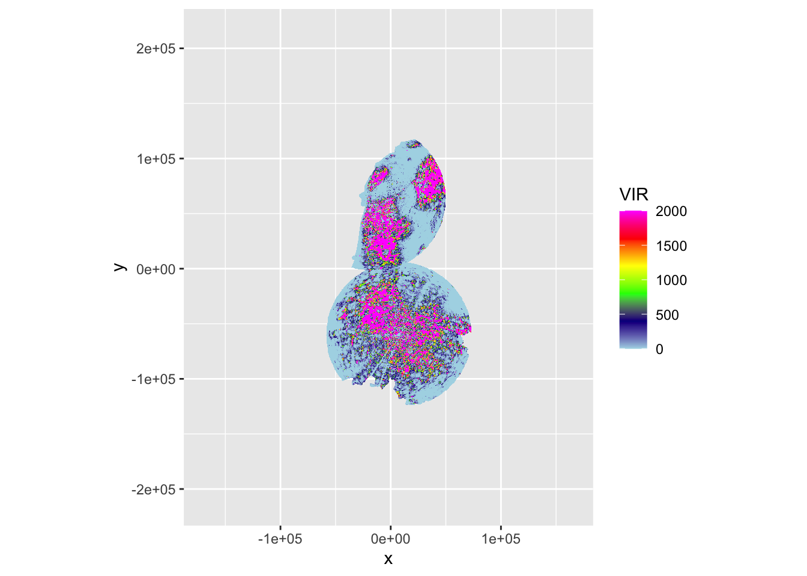

15 Context 1: Number of birds affected
We can use the RCS estimates calculated previously to generate a rough estimate of the number of birds affected by the fireworks disturbance.
15.1 Processing environment
First we load the PPIs at the timestamp of our selected scan.
selected_scan <- load("data/processed/pvol_selection.RData")
scan_dt <- str_extract(basename(pvol_dhl_path), "[0-9]{12}")
scan_dhl <- file.path("data/processed/final-ppis", paste0("RAD_NL61_VOL_NA_", scan_dt, "_ODIM.RDS"))
scan_hrw <- file.path("data/processed/final-ppis", paste0("RAD_NL62_VOL_NA_", scan_dt, "_ODIM.RDS"))
ppis_original <- lapply(list(scan_dhl, scan_hrw), function(x) readRDS(x))We create a composite PPI and filter out all pixels outside of 66km from the radar.
source("R/comp_ppi.R")
ppis <- ppis_original
maxrange <- 66000
# Set all columns to NA if further than maxrange from radar
ppis[[1]]$data$VIR[ppis[[1]]$data$dist_radar > maxrange] <- NA
ppis[[1]]$data$land[ppis[[1]]$data$dist_radar > maxrange] <- NA
ppis[[2]]$data$VIR[ppis[[2]]$data$dist_radar > maxrange] <- NA
ppis[[2]]$data$land[ppis[[2]]$data$dist_radar > maxrange] <- NA
cppi <- comp_ppi(ppis, param = c("VIR", "land"), method = c("max", "min"), res = c(500, 500), )## Warning in showSRID(uprojargs, format = "PROJ", multiline = "NO", prefer_proj
## = prefer_proj): Discarded datum Unknown based on WGS84 ellipsoid in Proj4
## definition
## Warning in showSRID(uprojargs, format = "PROJ", multiline = "NO", prefer_proj
## = prefer_proj): Discarded datum Unknown based on WGS84 ellipsoid in Proj4
## definition
## Warning in showSRID(uprojargs, format = "PROJ", multiline = "NO", prefer_proj
## = prefer_proj): Discarded datum Unknown based on WGS84 ellipsoid in Proj4
## definition
## Warning in showSRID(uprojargs, format = "PROJ", multiline = "NO", prefer_proj
## = prefer_proj): Discarded datum Unknown based on WGS84 ellipsoid in Proj4
## definition
## Warning in showSRID(uprojargs, format = "PROJ", multiline = "NO", prefer_proj
## = prefer_proj): Discarded datum Unknown based on WGS84 ellipsoid in Proj4
## definition
cppi$data$VIR[cppi$data$land == 0] <- NA
plot(cppi)
We can now calculate the total VIR within the radar domain and the number of birds that corresponds with given a few RCS values:
ptt_biomass <- readRDS("data/processed/sovon/ptt_biomass.RDS")
total_vir <- sum(cppi$data$VIR, na.rm = TRUE) * 1/4 # Convert to sum of VIR/0.5km2
paste0("Total VIR: ", format(total_vir, scientific = TRUE))
paste0("Response assuming mean RCS of ", round(mean(ptt_biomass$weighted_mean_crs)), " cm^2: ",
round(total_vir / mean(ptt_biomass$weighted_mean_crs)), " birds.")
paste0("Response assuming median RCS of ", round(median(ptt_biomass$weighted_mean_crs)), " cm^2: ",
round(total_vir / median(ptt_biomass$weighted_mean_crs)), " birds.")
paste0("Response assuming mean RCS of 11 cm^2: ", round(total_vir / 11), " birds.")## [1] "Total VIR: 3.314054e+07"
## [1] "Response assuming mean RCS of 86 cm^2: 383404 birds."
## [1] "Response assuming median RCS of 82 cm^2: 406339 birds."
## [1] "Response assuming mean RCS of 11 cm^2: 3012776 birds."